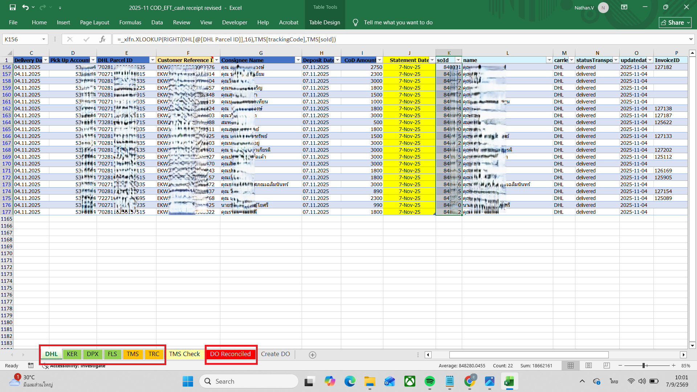

1
Export & Paste Raw Dataดาวน์โหลดและวางข้อมูลดิบ
Download raw reports from 3PL, TMS, and ERP, then paste them into the color-coded sheets (green, orange, and red tabs).
ดาวน์โหลดไฟล์ข้อมูลดิบจาก 3PL, TMS และ ERP แล้ววางตามชีทที่กำหนด (แท็บสีเขียว ส้ม และแดง)